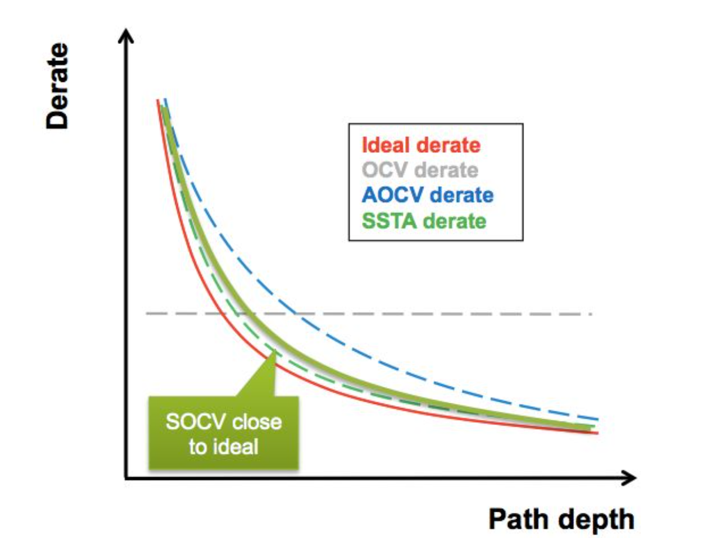

静态时序分析-OCV
本文最后更新于：2023年11月28日 中午
- 参考
1. OCV
OCV的全称是On Chip Variation，用于描述在一块芯片上不同管子间由于工艺偏差、电压降以及温度变化等引起的delay变化。
可以通过derate 特定单元/走线的延迟来对OCV的影响进行建模。
- 使用指令如下，对延迟进行derate处理。下面的指令是指定所有的网络延迟和单元延迟，也可以使用tcl脚本单独指定cell delay 或 net delay。
1
2
3
4# 降低延迟20%
set_timing_derate -early 0.8
# 增加延迟10%
set_timing_derate -late 1.1
- 使用指令如下，对延迟进行derate处理。下面的指令是指定所有的网络延迟和单元延迟，也可以使用tcl脚本单独指定cell delay 或 net delay。
拒绝过于悲观
注意对于上图这种 Launch clock 和 Capture clock 存在一段公共的时钟路径，这部分不应该对其进行derate处理，因为这部分物理实现上为处在同一个PVT条件下。Synopsys 称为CRPR = Clock Reconvergence Pessimism Removal。
- CRPR 是基于时序弧分析的，而不是gate分析的。
- 如下图所示，Innovus的分析行为是：如果Launch clock 和 Capture clock在时钟源的边沿相同，且到达common point时边沿时亦相同，那么CRPR的值就是从时钟源到common point的延时。如果不满足前面两个情况，那么CRPR的值就为两个时序弧延时的最小值。
- CRPR 是基于时序弧分析的，而不是gate分析的。
考虑time derate需要在某个单一条件下，比如说BC或者WC条件下，但是不要把多个Corner(例如：BC和WC)混在一起，再OCV，那样太过于悲观。
OCV 的分析与计算
- 以上面的电路为例，不考虑OCV影响，计算最小周期T需要满足
$$
1.2+0.8+5.2+0.35 <= T+1.2+0.86
$$ - 考虑OCV影响，使用tcl指令针对setup检查和hold检查分别加以约束。
- setup检查
- 对于Launch clock path 和 data path 使用 -late 选项；对Capture clock path 使用 -early 选项。
- 但是考虑到setup check 一般在WC PVT下，因此不需要在Launch clock path 和 data path上加time derate了，因为在WC下，其delay已经是所有corner中最大的了；但是在WC下，Capture clock path上的delay一定不是最小的，所以可以加derate指令。
1
2set_timing_derate -early 0.9
set_timing_derate -late 1.0 - 此时最小周期T计算满足（进行共同路径悲观去除，CPPR）
$$
0.8 + 5.2 + 0.35 <= 0.86*0.9 + T
$$
- hold检查
- 对于Launch clock path 和 data path 使用 -early 选项；对Capture clock path 使用 -late 选项。
- 但是考虑到hold check 一般在BC PVT下，因此不需要在Launch clock path 和 data path上加time derate了，因为在BC下，其delay已经是所有corner中最小的了；但是在BC下，Capture clock path上的delay一定不是最大的，所以可以加derate指令。
1
2set_timing_derate -early 1.0
set_timing_derate -late 1.2
- setup检查
- 以上面的电路为例，不考虑OCV影响，计算最小周期T需要满足
OCV & BC-WC
静态时序分析工具给出了3种分析模式
- Single mode
- BC-WC
- OCV mode（AOCV,POCV）
OCV的原始定义如下，可以看到与BC-WC混合模式十分相似。只是在计算setup和hold中都混用了max库和min库。
- 但是前面也有介绍，为了不要太悲观，我们一般不会采用这种BC,WC混用。
BC-WC模式如下。
2. AOCV
为什么需要AOCV
- 在40nm之前，简单的OCV derate模型基本可以覆盖大部分情况，且不会悲观到不能接收。
- 如下图所示，OCV模式设置的derate值与path depth无关，导致其既不能cover最悲观的部分，但又对另一部分过于悲观。在40nm之后，随着设计的频率不断提升，OCV所引入的不准确性已经无法承受。
Distance based AOCV
- 距离越远的cell之间的variation越大，所以AOCV的分析策略可以是Distance Based，距离越大，derate越大。
- 这个距离是指timing path所在物理范围矩形对角线的长度。timing path的位置信息可以由SPEF提供，要求抽SPEF时需要将坐标信息也抽出，而在STA读SPEF时，将坐标信息读入。
Depth based AOCV
- 考虑到不可能一条path上的所有cell的variation都是悲观的，会存在一些cell的variation是相互抵消的，所以在Depth based AOCV模型中，depth越大，derate值越小。
AOCV Table
- 有一维和二维两种。
- 一维：坐标为 depth。
- 二维：坐标为 distance 和 depth。虽然较一维更为准确，但是runtime也更大。
- 有一维和二维两种。
3. POCV
为什么需要POCV
AOCV 如果是基于GBA进行分析，那么精度不够，过于悲观；如果基于PBA进行分析，runtime又无法接受。
- GBA和PBA的相关解释可见这篇博客。
AOCV没有考虑input transition和output load对variation的影响，以及variation对input transition的影响。
使用一种新的计算模型：Synopsys 叫 POCV(Parametric OCV)，Cadence 叫 SOCV(Statistical OCV)。
POCV 将delay模拟成一个正态分布进行计算。如下图可知，POCV(SOCV)计算的值更精准。

POCV derate计算
对每个cell分别建模，cell 的 derate 是一个基于μ和σ的高斯随机变量函数，如下所示。
根据读入的LVF文件（LVF一般由foundry提供），可以根据input transition 和 output load 查找到平均延时和Sigma值。根据下表完成计算。其中n一般为3.
setup check hold check Capture clock path M-n*S M+n*S Launch clock path M+n*S M-n*S 以计算delay variation为例，cell rise中的值为M，而ocv_sigma_cell_rise中的值为S。
LVF (Liberty Variation Format)
传统的LVF文件中有输出为cell delay、output transition 以及timing check的LUT，LUT的index与NLDM/CCS一样都为 input transition 和 output load。
从文件中可以根据高斯分布delay的计算公式以及分析场景分别计算出正确的delay和transition。
- 这里可以看到LVF 查找表中考虑到了variation对transition的影响，并将该transition的值一级一级通过查找表传递。
考虑进入16nm，先进工艺结点和超低电压都会导致cell的delay为一个强非高斯分布，会出现均值偏移(mean-shift)以及偏斜效应(skewness effects)。
- 为了解决，引入3个moment-based模型。详细解释见这篇文章。